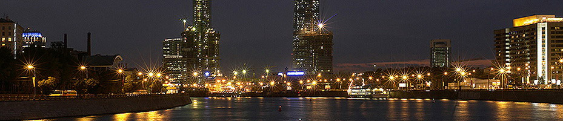

+7 (495) 744-000-6 работаем 24 часа 7 дней в неделю
О теплоходе КолесовЪ
Новейший колёсный банкетный теплоход «КолёсовЪ»
год постройки 2014
ехнические характеристики: длина 36 м, ширина 10 м, осадка 0,8 м, пассажировместимость - до 250 гостей.
Наши преимущества:
Уникальный колесный ТЕПЛОХОД. Новейшее оригинальное судно постройки 2014 года. Теплоход
идеально подходит для проведения банкетов, праздников, свадеб, дней рождения, тимбилдинга
деловых встреч, семинаров, корпоративных и других мероприятий. Новейшие разработки
российских судостроителей позволяют нам говорить о высокой экологичности нашего банкетохода.
Отсутствие вибрации и пониженная шумность позволяют ощутить комфорт самым требовательным гостям.
КолёсовЪ – второе судно этого проекта. Первое судно было построено и успешно эксплуатируется с 2011 года на российских реках.